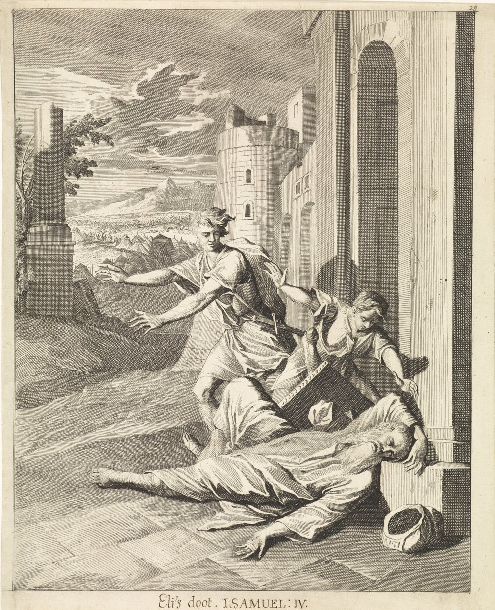

1 Samuel 4 — La Traducción Mister

El aguafuerte de Caspar Luyken, hecho para una Biblia ilustrada de Núremberg, sitúa el versículo 18 en una puerta de la ciudad: el viejo sacerdote ha caído hacia atrás de su silla y yace muerto, mientras el mensajero de la batalla y un joven corren hacia él y el campamento de la guerra se extiende por la llanura detrás.

Notas del traductor — versículo por versículo
«La palabra de Samuel llegó a todo Israel». El hebreo abre el capítulo con la línea que cierra el pensamiento del anterior: la palabra de Jehová llegó a Samuel, y ahora «la palabra de Samuel llegó a todo Israel». Luego, sin una palabra de Samuel, «Israel salió al encuentro de los filisteos para la batalla». El griego no tiene la línea, y abre en cambio «y aconteció en aquellos días que los filisteos se reunieron para la guerra contra Israel». Israel acampa en Eben-ezer, «piedra de ayuda», un nombre que el libro explicará cuando Samuel levante una piedra con ese nombre (1 Samuel 7:12, ya en estas páginas); los filisteos acampan en Afec; un Afec figura entre los reyes que Josué derrotó (Josué 12:18, ya en estas páginas). La RV60 dice «Y Samuel habló a todo Israel». Jehová había entregado a Israel en mano de los filisteos antes de que naciera Sansón (Jueces 13:1, ya en estas páginas).
«Para que venga en medio de nosotros». Después de caer cuatro mil, los ancianos hacen la pregunta correcta, «¿Por qué nos ha derrotado hoy Jehová?», y dan la respuesta equivocada: traer el arca de Silo, «para que venga en medio de nosotros y nos salve». El verbo hebreo puede ser «ella» o «él»; los ancianos hablan como si el cofre y el Dios fueran lo mismo. Las palabras de Moisés cuando el arca partía, «levántate, Jehová, y sean dispersados tus enemigos» (Números 10:35), eran una oración; y cuando Israel marchó una vez sin ella, «el arca del pacto de Jehová, y Moisés, no se movieron de en medio del campamento» (Números 14:44, los dos ya en estas páginas). La TNM 1987 dice «Tomémonos de Siló el arca del pacto de Jehová»; la NVI «para que nos acompañe».
«Entronizado sobre los querubines». Llevan «el arca del pacto de Jehová de los ejércitos, que está entronizado sobre los querubines»: el Dios que prometió hablar «de entre los dos querubines que están sobre el arca» (Éxodo 25:22, ya en estas páginas). El título «entronizado sobre los querubines» está en siete versículos de la Biblia hebrea, y este es el primero de ellos. El nombre completo del arca aquí, «el arca del pacto de Jehová de los ejércitos», está en un solo versículo de la Biblia hebrea. Con el arca vienen «los dos hijos de Elí … Ofni y Finees». La RV60 dice «que moraba entre los querubines»; la TNM 1987 «que está sentado sobre los querubines».
«Gran júbilo». «Todo Israel gritó con gran júbilo, y la tierra retumbó». «Gran júbilo», teruá guedolá, está en cinco versículos de la Biblia hebrea, y los dos primeros son Jericó, donde «gritó el pueblo a gran voz, y el muro cayó totalmente» (Josué 6:20, ya en estas páginas). Esta vez el grito no derriba nada. El verbo de la tierra que retumba es el que se usa cuando Noemí volvió y «toda la ciudad se conmovió» (Rut 1:19, ya en estas páginas). La RV60 dice «gritó con tan gran júbilo que la tierra tembló»; la TNM 1987 «de modo que la tierra estuvo en conmoción».
«Estos dioses poderosos». Los filisteos lo oyen y tienen miedo: «Dios ha entrado en el campamento … ¿Quién nos librará de la mano de estos dioses poderosos? Estos son los dioses que hirieron a Egipto con toda clase de plagas en el desierto». La palabra para plaga es makká, «golpe». El hebreo elohim lleva aquí adjetivos y pronombres en plural, como los llevaría para los dioses de cualquier pueblo, y ellos sitúan las plagas «en el desierto». «Estos dioses poderosos» está en un solo versículo de la Biblia hebrea. La RV60 dice «estos dioses poderosos»; la RV 1909 «estos dioses fuertes»; la TNM 1987 lo pone en singular, «este majestuoso Dios», que es el Dios que conoce el lector pero no las palabras que dicen los filisteos.
«Sean hombres». La respuesta al miedo es un grito de guerra: «Esfuércense y sean hombres, filisteos, para que no sirvan a los hebreos como ellos les han servido a ustedes». «Hebreos» es como llaman a Israel los de fuera. «Y sean hombres», vihyú laanashim, está en un solo versículo de la Biblia hebrea. La RV60 dice «Esforzaos, oh filisteos, y sed hombres»; la NVI «¡Sean hombres!».
El arca tomada. «Y el arca de Dios fue tomada; y los dos hijos de Elí murieron, Ofni y Finees». La señal dada a Elí, «en un mismo día morirán los dos» (1 Samuel 2:34), y la «cosa en Israel que a todo el que la oiga le zumbarán los dos oídos» (1 Samuel 3:11, los dos ya en estas páginas) se juntan en una sola frase. Israel huye «cada uno a su tienda», y caen treinta mil hombres de a pie. Josefo añade que Elí había dicho a sus hijos que no volvieran vivos si el arca era tomada, y que Finees ya servía como sumo sacerdote porque su padre era viejo (Antigüedades 5.354, numerado 5.11.2 en Whiston). La RV60 dice «Y el arca de Dios fue tomada, y muertos los dos hijos de Elí, Ofni y Finees».
«Tierra sobre la cabeza». Un hombre de Benjamín corre unos treinta kilómetros hasta Silo «aquel mismo día, con la ropa rasgada y tierra sobre la cabeza», el luto que Josué y los ancianos se pusieron después de Hai (Josué 7:6, ya en estas páginas). «Y tierra sobre la cabeza» está en tres versículos de la Biblia hebrea: aquí, el amalecita que trae a David la noticia de la muerte de Saúl (2 Samuel 1:2, ya en estas páginas) y Husai en el monte de los Olivos (2 Samuel 15:32).
Elí junto al camino. Elí está sentado «en la silla junto al camino, vigilando», la misma kisé en que estaba cuando Ana oró (1 Samuel 1:9, ya en estas páginas); el texto escrito tiene yaj y el margen yad, «junto a». «Su corazón temblaba por el arca de Dios», no por sus hijos. Tiene «noventa y ocho años, y sus ojos se habían quedado fijos»: los ojos que «habían comenzado a nublarse» (1 Samuel 3:2, ya en estas páginas) están ahora fijos y ciegos. El griego le da noventa; Josefo, noventa y ocho (Antigüedades 5.359, numerado 5.11.3 en Whiston). La TNM 1987 dice «sus ojos se habían quedado fijos, de modo que no podía ver»; la RV60 «sus ojos se habían oscurecido»; la NVI «sus ojos ni se movían».
Cuatro golpes. «¿Qué ha pasado, hijo mío?». El mensajero, ha-mevaser, el que trae la noticia (la raíz de besorá, «nuevas»), responde en orden creciente: «Israel ha huido delante de los filisteos, y además ha habido una gran matanza en el pueblo, y además tus dos hijos han muerto, Ofni y Finees, y el arca de Dios ha sido tomada». El viejo sobrevive a los tres primeros.
«Viejo y pesado». «Cuando él mencionó el arca de Dios, Elí cayó hacia atrás de la silla, junto a la puerta, y se le rompió el cuello y murió, porque el hombre era viejo y pesado». Pesado es kaved, la raíz de kavod, «gloria», y de «honrar»: Elí «honró» a sus hijos más que a Dios y engordó con las ofrendas (1 Samuel 2:29, ya en estas páginas), y dos versículos después su nuera dirá que la gloria se ha ido. La palabra para su «cuello», mafréqet, está en un solo versículo de la Biblia hebrea. «Había juzgado a Israel cuarenta años»; el griego dice veinte, Josefo cuarenta. La RV60 dice «porque era hombre viejo y pesado»; la NVI «Como era viejo y pesaba mucho».
«No temas». La mujer de Finees oye la noticia y entra en parto, «porque le sobrevinieron sus dolores». Mientras muere, las mujeres le dicen: «No temas, que has dado a luz un hijo», las palabras de la partera de Raquel, «No temas, que también este es un hijo para ti» (Génesis 35:17, ya en estas páginas); también Raquel nombró a su hijo con su último aliento. «Pero ella no respondió, ni puso en ello su corazón». La TNM 1987 dice «ella no contestó ni fijó su corazón en ello»; la RV60 «Mas ella no respondió, ni se dio por entendida».
Icabod — «Sin gloria». Lo llama I-javod, «¿Dónde está la gloria?» o «Sin gloria», «diciendo: “La gloria se ha ido al exilio de Israel”». El nombre está en dos versículos de la Biblia hebrea, aquí y en 1 Samuel 14:3, donde el sacerdote Ahías es llamado hijo de «Ahitob, hermano de Icabod». El verbo es galah, el verbo de un pueblo llevado al exilio, usado aquí de la gloria y del arca. Josefo llama al niño Iachobes, dice que el nombre significa «deshonra» y añade que nació a los siete meses y vivió (Antigüedades 5.360, numerado 5.11.4 en Whiston). El griego desfigura el nombre como Ouai barchabōth. La TNM 1987 conserva el exilio: «La gloria se ha ido de Israel al destierro»; la RV60 dice «¡Traspasada es la gloria de Israel!».
Al exilio o manifestada. Lo dice dos veces, la segunda con la razón: «porque el arca de Dios ha sido tomada». Las dos palabras galah kavod están juntas en tres versículos de la Biblia hebrea: dos veces aquí, y en Isaías 40:5, donde el mismo verbo en su otro sentido significa «manifestarse»: «Y se manifestará la gloria de Jehová, y toda carne juntamente la verá» (Isaías 40:5, ya en estas páginas).
Patrones que vale la pena recordar
Dónde esta traducción mantiene las palabras exactas y distintas: «para que venga» para el yavó de los ancianos, con «él» en la nota; «entronizado sobre los querubines» para yoshev ha-keruvim; «gran júbilo» para teruá guedolá, como en Jericó; «estos dioses poderosos», con el plural de los filisteos; «los hebreos», el nombre que usan los de fuera; «tierra sobre la cabeza», como en 2 Samuel 1:2; «la silla», como en 1 Samuel 1:9; «fijos» para los ojos de Elí, después de «nublarse» en 3:2; «pesado» para kaved; «ni ayer ni anteayer»; y «se ha ido al exilio» para galah.
Ecos pagados. «En un mismo día morirán los dos» (2:34) y los oídos que zumban (3:11) se cumplen; vuelven la silla de Elí de 1:9 y sus ojos que se nublaban en 3:2; y la «pesadez» de una casa que se engordó (2:29–30) termina en «la gloria se ha ido».
Ecos sembrados. El arca en la casa de Dagón en Asdod en 1 Samuel 5, ya en estas páginas; Eben-ezer nombrado en 1 Samuel 7:12, ya en estas páginas; y la línea de Ahitob, el hermano de Icabod, en 1 Samuel 14:3.
Próxima entrega de este libro: 1 Samuel 5 — los filisteos ponen el arca junto a Dagón en su casa de Asdod; por la mañana Dagón está de bruces delante de ella, y a la mañana siguiente su cabeza y sus manos yacen rotas sobre el umbral, mientras una plaga de tumores va de ciudad en ciudad con el arca.